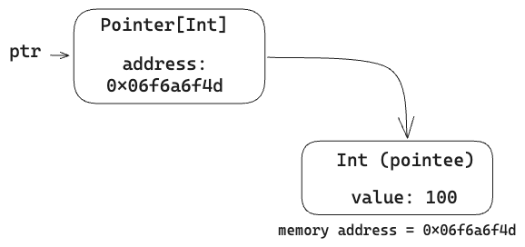
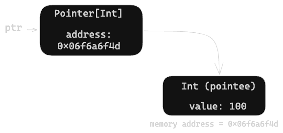
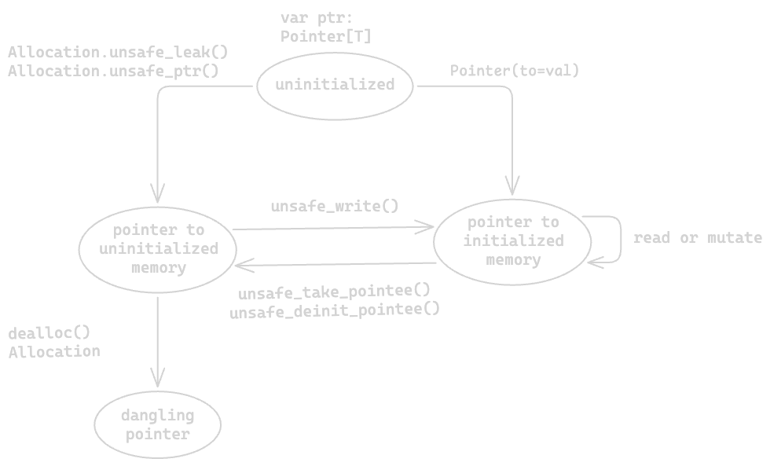
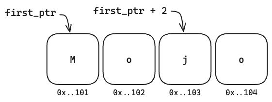
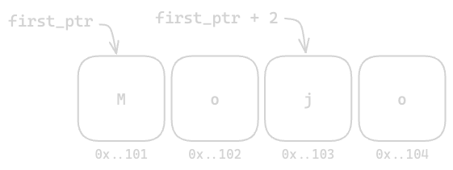
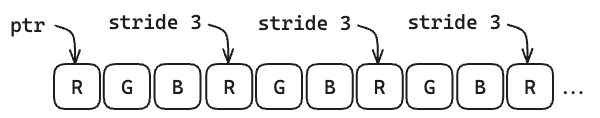

Using pointers
Allocation, offsets, strided loads, and the pointer lifecycle.
The Pointer struct is Mojo's
primary pointer type for indirectly referencing locations in memory.
You can use a pointer in many different ways:
-
As a safe, indirect reference to an existing owned value. (For example, the iterator for a collection might hold a pointer back to the original collection.)
-
As a pointer to a block of dynamically-allocated memory, to build array-like data structures.
-
As a raw memory location to pass to low-level interfaces or other programming languages.
Some of these uses are safe, but others—particularly those involving dynamically-allocated memory—are unsafe: your code, not the compiler, is responsible for using the memory correctly.
For a comparison of standard library pointer types, see Intro to pointers.
Pointer basics
A Pointer is a type that holds an address to memory. You can store
and retrieve values in that memory. The Pointer type is parameterized—it can
point to any type of value, and the value type is specified as a parameter. The
value pointed to by a pointer is sometimes called a pointee.
var count: Int = 0
# Point to an existing value
var ptr = Pointer(to=count) # ptr's type is Pointer[Int, ...]
# Mutate the value
ptr[] = 100


Accessing the memory—to retrieve or update a value—is called dereferencing the pointer. You can dereference a pointer by following the variable name with an empty pair of square brackets:
# Update an initialized value
ptr[] += 10
# Access an initialized value
print(ptr[])
110
These two operations—creating a pointer to an existing value and dereferencing that pointer—are safe: the pointer maintains the ownership linkage to the original value, so Mojo can track the memory.
Other operations, especially those involving dynamically-allocated memory, are generally unsafe, meaning that your code is responsible for:
- allocating and deallocating memory
- knowing whether a given memory location is initialized or uninitialized
- manually calling deinitializers when a pointee is no longer being used
Unsafe operations are prefixed with unsafe_ or use a keyword argument prefixed
with unsafe_.
Lifecycle of a pointer
At any given time, a pointer value can be in one of several states. It can be uninitialized, dangling, or point to a valid memory location which is either initialized or uninitialized:
-
Uninitialized. Just like any variable, a variable of type
Pointercan be declared but uninitialized.Mojo var ptr: Pointer[Int, MutUntrackedOrigin] -
Pointing to allocated, uninitialized memory. The
alloc()function allocates a block of memory with space for the specified number of elements of the pointee's type, andAllocation.unsafe_ptr()returns a pointer to that memory.Mojo var allocation = alloc(Layout[Int].single()) var ptr = allocation.unsafe_ptr()Trying to dereference a pointer to uninitialized memory results in undefined behavior.
-
Pointing to initialized memory. You can initialize an allocated, uninitialized pointer by moving or copying an existing value into the memory. Or you can construct a pointer to an existing value by calling the initializer with the
tokeyword argument.Mojo ptr.unsafe_write(value^) # or ptr.unsafe_write(copy=value) # or var ptr = Pointer(to=value)Once the value is initialized, you can read or mutate it using the dereference syntax:
Mojo var oldValue = ptr[] ptr[] = newValue -
Dangling. When you free the pointer's allocated memory, you're left with a dangling pointer. The address still points to its previous location, but the memory is no longer allocated to this pointer. Trying to dereference the pointer, or calling any method that would access the memory location, results in undefined behavior.
Mojo dealloc(allocation^)
The following diagram shows the lifecycle of a Pointer:
![A state diagram with four states. A pointer declared as var ptr: Pointer[T] starts uninitialized. From there, Allocation.unsafe_leak() or Allocation.unsafe_ptr() leads to a pointer to uninitialized memory, and Pointer(to=val) leads to a pointer to initialized memory. unsafe_write() moves a pointer from uninitialized to initialized memory, while unsafe_take_pointee() and unsafe_deinit_pointee() move it back. A pointer to initialized memory can be read or mutated in place. Calling dealloc() on the Allocation leaves a dangling pointer.](../assets/images/pointer-lifecycle-0a3a965c13f7a7d6b6bf716f47b59084.png)

PointerAllocating memory
Use the std.memory.alloc module to allocate and
deallocate memory. To allocate memory, you need to provide a layout, which
specifies:
- The type of value to be stored (for example,
Int). - The number of values to allocate space for.
- Optionally, the memory alignment for the allocation.
The alloc() function returns an Allocation, an explicitly-destroyed handle
that holds an unsafe pointer to the allocated memory and the layout used to
allocate it. Use dealloc() to free the allocation and its associated memory.
from std.memory.alloc import alloc, dealloc, Layout
var allocation = alloc(Layout[Int](count=4))
# Use allocation
var ptr = allocation.unsafe_ptr()
for i in range(4):
ptr.unsafe_offset(i).unsafe_write(i)
# Release allocation
dealloc(allocation^)
You can also write the allocation above as alloc[Int]({count = 4}).
Because Allocation is an explicitly-destroyed type, you must deallocate it
before it goes out of scope.
Allocation failure terminates the program; you can't catch this failure with a
try/except block. The alloc() function always returns an allocation with a
valid, non-null pointer pointing to the allocated space. The allocated space is
uninitialized—like a variable that's been declared but not initialized.
Initializing the pointee
To initialize allocated memory, Pointer provides the
unsafe_write()
method, which moves a value into the pointer's memory location:
str_ptr.unsafe_write(my_string^)
Note that to move the value, you usually need to add the transfer sigil (^),
unless the value is an
implicitly copyable type (like
Int) or a newly-constructed, "owned" value:
str_ptr.unsafe_write("Owned string")
To copy a value into the pointer's memory location instead of moving it, pass
it as the copy keyword argument:
ptr.unsafe_write(copy=my_value)
Alternately, you can get a pointer to an existing value by calling the
Pointer initializer with the keyword to argument. This is useful for
getting a pointer to a value on the stack, for example.
var counter: Int = 5
var ptr = Pointer(to=counter)
Note that when calling Pointer(to=value), you don't need to allocate
memory, since you're pointing to an existing value.
Dereferencing pointers
Use the [] dereference operator to access the value stored at a pointer (the
"pointee").
# Read from pointee
print(ptr[])
# Mutate pointee
ptr[] = 0
5
If you've allocated space for multiple values, you can use subscript syntax
with the unsafe_offset keyword argument to access the values:
ptr[unsafe_offset=3] = 0
# Equivalent to:
ptr.unsafe_offset(3)[] = 0
You cannot safely use the dereference operator on uninitialized memory, even to initialize a pointee. This is because assigning to a dereferenced pointer calls lifecycle methods on the existing pointee (such as the deinitializer, move initializer or copy initializer).
var allocation = alloc[String]({count = 1})
var str_ptr = allocation.unsafe_ptr()
# str_ptr[] = "Testing" # Undefined behavior!
str_ptr.unsafe_write("Testing")
str_ptr[] += " pointers" # Works now
Destroying or removing values
The
unsafe_take_pointee()
method moves a pointee from the memory location pointed to by ptr. This is a
consuming move. It invokes the move initializer on the destination value. It
leaves the memory location uninitialized.
The
unsafe_deinit_pointee()
method calls the deinitializer on the pointee, and leaves the memory location
pointed to by ptr uninitialized.
Both unsafe_take_pointee() and unsafe_deinit_pointee() require that the
pointer is non-null, and the memory location contains a valid, initialized value
of the pointee's type; otherwise the function results in undefined behavior.
Calling
unsafe_write_move_from(self, src)
moves the value pointed to by src into the memory location pointed to by
self. After this operation, ownership of that value transfers from src to
self and the memory at src is uninitialized: do not read from it, and do not
invoke deinitializers on it. To make the memory valid again, initialize it with
a new value using one of the unsafe_write*() operations.
Freeing memory
Calling dealloc() on an allocation frees
the allocated memory. It doesn't call the deinitializers on any values stored in
the memory. You need to do that explicitly (for example, using
unsafe_deinit_pointee()
or one of the other functions described in
Destroying or removing values).
Disposing of a pointer without freeing the associated memory can result in a memory leak—where your program keeps taking more and more memory, because not all allocated memory is being freed.
Since deallocating an Allocation or ThinAllocation consumes the allocation,
you're protected from freeing an allocation twice, unless you use the
unsafe_leak() method described in
Allocations and raising functions.
After freeing a pointer's memory, you're left with a dangling pointer—its address still points to the freed memory. Any attempt to access the memory, like dereferencing the pointer, results in undefined behavior.
Storing multiple values
As mentioned in Allocating memory, you can use a
Pointer to allocate memory for multiple values. The memory is allocated
as a single, contiguous block. The
unsafe_offset() method
returns a new pointer offset by the specified number of values from the
original pointer:
var third_ptr = first_ptr.unsafe_offset(2)
The offset can also be negative, to move backward through the block. Because
unsafe_offset() returns a new pointer instead of modifying the original, you
assign the result back to a variable to advance it:
# Advance the pointer one element:
ptr = ptr.unsafe_offset(1)


For example, the following code allocates memory to store 6 Float64
values, and initializes them all to zero.
var allocation = alloc(Layout[Float64](count=6))
var float_ptr = allocation.unsafe_ptr()
for offset in range(6):
float_ptr.unsafe_offset(offset).unsafe_write(0.0)
Once the values are initialized, you can access them using subscript syntax
with the unsafe_offset keyword argument:
float_ptr[unsafe_offset=2] = 3.0
for offset in range(6):
print(float_ptr[unsafe_offset=offset], end=", ")
0.0, 0.0, 3.0, 0.0, 0.0, 0.0,
Pointers and origins
The Pointer struct has an origin parameter to track the origin of the
memory it points to. The full parameter signature for Pointer looks like
this:
struct Pointer[
mut: Bool,
//,
T: AnyType,
origin: Origin[mut=mut],
*,
address_space: AddressSpace = .GENERIC,
]
For pointers initialized with the to keyword argument, the origin is inferred
from the origin of the pointee. For example, in the following code,
s_ptr.origin is the same as the origin of s:
var s = "Testing"
var s_ptr = Pointer(to=s)
When allocating memory with the alloc() function, the returned pointer has an
origin value of MutUntrackedOrigin. This value represents an origin that is
mutable and doesn't alias existing values. For example, it doesn't point to
the memory allocated for any other variable. This memory isn't
tracked by Mojo's lifetime checker and you're responsible for freeing it.
If you're using a pointer in the implementation of a struct, you usually don't have to worry about the origin, as long as the pointer isn't exposed outside of the struct. For example, if you implement a static array type that allocates memory in its initializer, deallocates in its deinitializer, and doesn't expose the pointer outside of the struct, the default origin is fine.
But if the struct exposes a pointer or reference to that memory, you need
to set the origin appropriately. For example, the
List type has an unsafe_ptr()
method that returns a Pointer to the underlying storage. In this case,
the returned pointer should share the origin of the list, since the list is
the logical owner of the storage.
That method looks something like this:
def unsafe_ptr[
origin: Origin, address_space: AddressSpace, //
](ref[origin, address_space] self) -> Pointer[
Self.T, origin, address_space=address_space
]:
return (
self._data.unsafe_mut_cast[origin.mut]()
.unsafe_origin_cast[origin]()
.unsafe_address_space_cast[address_space]()
)
This returns a copy of the original pointer, with the origin set to match the
origin and mutability of the self value.
A method like this is unsafe, but setting the correct origin makes it safer, since the compiler knows that the pointer is referring to data owned by the list.
When taking a pointer as a function argument, you often want to require either a mutable or immutable origin, but otherwise allow the compiler to infer the origin. Here's an example:
def print_bytes(bytes: Pointer[mut=False, Byte, _], count: Int):
for i in range(count):
print(hex(bytes[unsafe_offset=i]), end=" ")
print()
By binding the infer-only mut parameter to False, and leaving the origin
unbound (using _), this signature lets the compiler infer the origin, but
forces the origin to be immutable. Mojo can implicitly cast a mutable pointer to
an immutable pointer, so you can pass a mutable pointer into print_bytes(),
but the function can't mutate the data.
Working with nullability
Pointer is a non-nullable type. To model a null pointer, wrap it
in Optional:
var ptr = Optional[Pointer[Int, MutUntrackedOrigin]]()
This creates an Optional with a value of None, which is equivalent
to a null pointer. Optional[Pointer] has the same memory layout
as a raw pointer, so you can pass it across FFI boundaries as NULL.
To check whether an optional pointer is null, use Optional methods:
if ptr:
# ptr is not None — safe to unwrap
var p = ptr.value()
When you need a non-null value for deferred initialization, use
unsafe_dangling() instead of an Optional:
var ptr = Pointer[Int, MutUntrackedOrigin].unsafe_dangling()
For a practical example of optional pointers in a data structure, see Self-referential structs.
More memory allocation patterns
In some cases, you may not want to hold on to an Allocation:
- When allocating data for a struct, you may want to use a
ThinAllocationinstead, to avoid using extra memory. - When working with raising functions, you sometimes need to avoid
an explicitly-destroyed type like
AllocationorThinAllocation.
The following sections describe these special cases.
Holding an allocation in a struct field
When storing an allocation as a struct field, you may not want to store the
extra layout data included in the Allocation struct. The layout data is two
Int values (alignment and element count), typically an extra 16 bytes per
allocation. If your struct already tracks the amount of space it's allocated,
you can eliminate this extra space by storing a ThinAllocation, which is an
explicitly-destroyed wrapper around a pointer.
The Allocation.into_thin() method consumes the original allocation and
returns a ThinAllocation:
struct Counter:
comptime _layout = Layout[Int].single()
var _alloc: ThinAllocation[Int]
def __init__(out self, value: Int):
self._alloc = alloc(Self._layout).into_thin()
self._alloc.unsafe_ptr().unsafe_write(value)
def increment(mut self):
self._alloc.unsafe_ptr()[] += 1
def get(self) -> Int:
return self._alloc.unsafe_ptr()[]
def __deinit__(deinit self):
# Convert ThinAllocation back into Allocation
dealloc(self._alloc^.unsafe_with_layout(Self._layout))
To deallocate a ThinAllocation, you need to supply the original layout
to reconstruct an Allocation using the unsafe_with_layout() method.
This example shows storing the layout as a comptime member; for a struct
with a dynamic size, you can reconstruct the original layout:
self._alloc^.unsafe_with_layout({count = size})
Allocations and raising functions
Because Allocation and ThinAllocation need to be explicitly deallocated
before they go out of scope, they can conflict with raising functions.
Consider the following code:
def allocating_function() raises:
var data = alloc[Float64]({count = 64})
# ...
raising_function(data.unsafe_ptr())
dealloc(data^)
Because an error can cause allocating_function() to exit without executing the
dealloc() call, the compiler identifies this as a potential memory leak. There
are a couple of approaches to this problem. The function can use a
try/except statement to ensure that the memory is deallocated in the event
of an error:
def allocating_function() raises:
var data = alloc[Float64]({count = 64})
# ...
try:
raising_function(data.unsafe_ptr())
except e:
dealloc(data^)
raise e^ # propagate the error
dealloc(data^)
Where this isn't viable, the alternative is to use the
unsafe_leak() method to take ownership of the allocation's
pointer. This consumes the allocation, but requires you to
ensure the memory is deallocated. You should consider this
pattern a last resort if other patterns don't work:
def leaky_function() raises:
var data_ptr = alloc[Float64]({count = 64}).unsafe_leak()
# ...
raising_function(data_ptr)
dealloc(
ThinAllocation(unsafe_owned_ptr=data_ptr).unsafe_with_layout(
{count = 64}
)
)
Downsides of this approach include:
-
If
raising_function()raises an error in this example,dealloc()never gets called, leaking the memory. -
When you reconstruct an
Allocationfrom aPointerlike this, you run the risk of freeing the same memory twice.
Working with foreign pointers
When exchanging data with other programming languages, you may need to construct
a Pointer from a foreign pointer. Mojo restricts creating
Pointer instances from arbitrary addresses, to avoid users accidentally
creating pointers that alias each other (that is, two pointers that refer to
the same location). However, there are specific methods you can use to get a
Pointer from a Python or C/C++ pointer.
When dealing with memory allocated elsewhere, you need to be aware of who's responsible for freeing the memory. Freeing memory allocated elsewhere can result in undefined behavior.
When working with some foreign functions, you may need to supply a pointer with
no specific type (a type-erased pointer, or "void pointer" in C/C++). This is
equivalent to a Mojo OpaquePointer.
You also need to be aware of the format of the data stored in memory, including data types and byte order. For more information, see Converting data: bitcasting and byte order.
Creating a Mojo pointer from a raw memory address
You can create a Pointer from a raw memory address using the
unsafe_from_address initializer.
def write_to_address(mmio_address: Int, value: Int32):
var ptr = Pointer[Int32, MutUntrackedOrigin](
unsafe_from_address=mmio_address
)
# Writing to a raw memory address may require a volatile load/store as the
# operation may have side effects not visible to the compiler.
# You can specify this using the `volatile` parameter.
ptr.unsafe_store[volatile=True](value)
This is unsafe, as the caller must ensure the address is valid before writing to it, and that the memory is initialized before reading from it. The caller must also ensure the pointer's origin and mutability are valid for the address; failure to do so may result in undefined behavior.
Creating a Mojo pointer from a Python pointer
The PythonObject type defines an
unsafe_get_as_pointer()
method to construct a Pointer from a Python address.
The following code creates a NumPy array and then accesses the data using a Mojo pointer:
from std.python import Python
def share_array() raises:
var np = Python.import_module("numpy")
var arr = np.array(Python.list(1, 2, 3, 4, 5, 6, 7, 8, 9))
var ptr = arr.ctypes.data.unsafe_get_as_pointer[.int64]()
for i in range(9):
print(ptr[unsafe_offset=i], end=", ")
print()
def main() raises:
share_array()
1, 2, 3, 4, 5, 6, 7, 8, 9,
This example uses the NumPy
ndarray.ctypes
attribute to access the raw pointer to the underlying storage
(ndarray.ctypes.data). The unsafe_get_as_pointer() method constructs a
Pointer to this address.
Working with C/C++ pointers
If you call a C/C++ function that returns a pointer using the
external_call function, you can
specify the return type as a Pointer, and Mojo will handle the type conversion
for you.
Notably, the origin parameter when working across FFI boundaries should often
be set to (Mut/Immut)UntrackedOrigin, since the pointer points to memory
allocated outside of the Mojo program.
from std.ffi import external_call
def get_foreign_pointer() -> Pointer[Int, MutUntrackedOrigin]:
var ptr = external_call[
"my_c_function", # external function name
Pointer[Int, MutUntrackedOrigin] # return type
]()
return ptr
Opaque pointers
The OpaquePointer type is a pointer that does not have a specific type. In
other languages, this is usually called a type-erased pointer or a void pointer.
Opaque pointers are usually used when interfacing with non-Mojo code, such as a
C library function that takes a void pointer.
OpaquePointer is actually a type alias for Pointer[NoneType], so it
has the same API as any other Pointer.
You can't dereference an opaque pointer, but you can cast it to a specific type
using the unsafe_bitcast() method. Similarly, you can create an opaque pointer
from an existing pointer by bitcasting to NoneType. For example:
var str = "Hello, world!"
var str_ptr = Pointer(to=str)
var opaque_ptr = str_ptr.unsafe_bitcast[NoneType]()
# ... call some foreign function that takes a void pointer
Converting data: bitcasting and byte order
Bitcasting a pointer returns a new pointer that has the same memory location, but a new data type. This can be useful if you need to access different types of data from a single area of memory. This can happen when you're reading binary files, like image files, or receiving data over the network.
The following sample processes a format that consists of chunks of data, where each chunk contains a variable number of 32-bit integers. Each chunk begins with an 8-bit integer that identifies the number of values in the chunk.
def read_chunks(
var ptr: Pointer[mut=False, UInt8, _],
) -> List[List[UInt32]]:
var chunks = List[List[UInt32]]()
# A chunk size of 0 indicates the end of the data
var chunk_size = Int(ptr[])
while chunk_size > 0:
# Skip the 1 byte chunk_size and get a pointer to the first
# UInt32 in the chunk
var ui32_ptr = ptr.unsafe_offset(1).unsafe_bitcast[UInt32]()
var chunk = List[UInt32](capacity=chunk_size)
for i in range(chunk_size):
chunk.append(ui32_ptr[unsafe_offset=i])
# List is not implicitly copyable, so it needs the transfer sigil (^)
chunks.append(chunk^)
# Move our pointer to the next byte after the current chunk
ptr = ptr.unsafe_offset(1 + 4 * chunk_size)
# Read the size of the next chunk
chunk_size = Int(ptr[])
return chunks^
When dealing with data read in from a file or from the network, you may also need to deal with byte order. Most systems use little-endian byte order (also called least-significant byte, or LSB) where the least-significant byte in a multibyte value comes first. For example, the number 1001 can be represented in hexadecimal as 0x03E9, where E9 is the least-significant byte. Represented as a 16-bit little-endian integer, the two bytes are ordered E9 03. As a 32-bit integer, it would be represented as E9 03 00 00.
Big-endian or most-significant byte (MSB) ordering is the opposite: in the
32-bit case, 00 00 03 E9. MSB ordering is frequently used in file formats and
when transmitting data over the network. You can use the
byte_swap() function to swap the byte
order of a SIMD value from big-endian to little-endian or the reverse. For
example, if the function above were reading big-endian data, you'd need to
change a single line:
chunk.append(byte_swap(ui32_ptr[unsafe_offset=i]))
Working with SIMD vectors
The Pointer type includes
unsafe_load()
and
unsafe_store()
methods for performing aligned loads and stores of scalar values. It also has
methods supporting strided load/store and gather/scatter.
Strided load loads values from memory into a SIMD vector using an offset (the "stride") between successive memory addresses. This can be useful for extracting rows or columns from tabular data, or for extracting individual values from structured data. For example, consider the data for an RGB image, where each pixel is made up of three 8-bit values, for red, green, and blue. If you want to access just the red values, you can use a strided load or store.

The following function uses the
unsafe_strided_load()
and
unsafe_strided_store()
methods to invert the red pixel values in an image, 8 values at a time. (Note
that this function only handles images where the number of pixels is evenly
divisible by eight.)
def invert_red_channel(ptr: Pointer[mut=True, UInt8, _], pixel_count: Int):
# Number of values loaded or stored at a time
comptime simd_width = 8
# Bytes per pixel, which is also the stride size
comptime bpp = 3
for i in range(0, pixel_count * bpp, simd_width * bpp):
var red_values = ptr.unsafe_offset(i).unsafe_strided_load[
width=simd_width
](bpp)
# Invert values and store them in their original locations
ptr.unsafe_offset(i).unsafe_strided_store[width=simd_width](
~red_values, bpp
)
The
unsafe_gather()
and
unsafe_scatter()
methods let you load or store a set of values that are stored in arbitrary
locations. You do this by passing in a SIMD vector of offsets to the current
pointer. For example, when using unsafe_gather(), the nth value in
the vector is loaded from (pointer address) + offset[n].
Safety
To use Pointer safely, you need to ensure that the pointer
points to a single, initialized value. If the value is logically
owned by the pointer, you need to ensure the value's deinitializer is
called before deallocating the memory.
Using Pointer(to=value) and the simple dereference (ptr[]) ensures
that the pointer is as safe as the value it's pointing to.
Using any APIs prefixed with unsafe_ (or that have keyword arguments
prefixed with unsafe_) results in a potentially unsafe operation.
For example:
-
If you allocate memory, you need to deallocate the memory. If you use the
unsafe_leak()method to obtain a pointer from an allocation, the Mojo lifetime checker can't track the memory and won't error on possible leaks. You need to ensure the memory gets deallocated. This is also true if you assume responsibility for an allocation by calling a method likeList.unsafe_take_allocation(). -
If you allocate memory, or take ownership of an allocation from another source, you need to track whether pointees are initialized or uninitialized. Accessing uninitialized memory results in undefined behavior.
-
When accessing more than one value through a pointer (for example, using
unsafe_offset()orunsafe_load()), you're always in unsafe territory. You must track the size of the allocation (to know whether a given address is valid) and which values are initialized.
This chapter is a faithful rendering of the Mojo documentation page https://mojolang.org/docs/manual/pointers/using-pointers/, saved Thu, 01 Oct 2026 15:38:42 GMT.